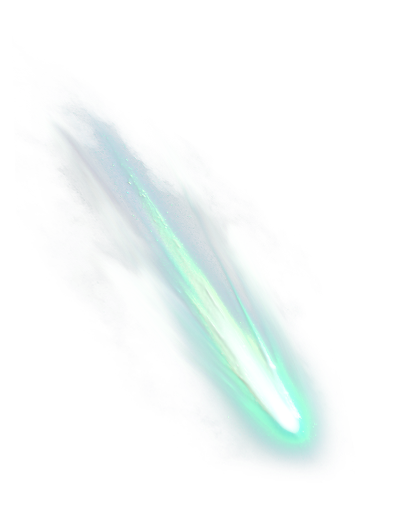
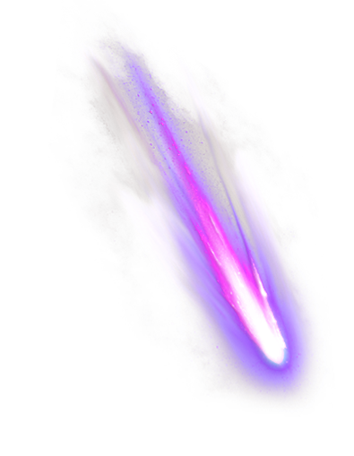
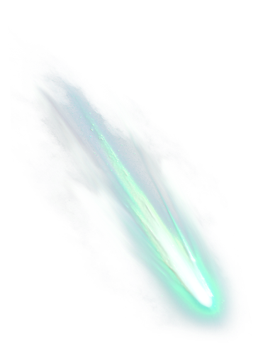
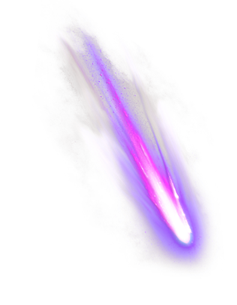

Comet Atlas
ใช้ชื่อตามธรรมเนียมของหอดูดาวที่ค้นพบว่า "ATLAS"
มีชื่อตามระบบการเรียกดาวหางว่า
"C/2019 Y4"
อักษร C ที่นำหน้าชื่อดาวหาง
หมายถึงวงโคจรของดาวหางนั้น
ไม่โคจรมาซ้ำรอบในช่วงชีวิตมนุษย์
โดยการคำนวนเบื้องต้น
ดาวหางแอตลาสมีวงโคจรรอบดวงอาทิตย์
นานถึง 6,025 ปี
Comet Ikeya-Seki
พบโดยคาโอรู อิเคยา และ ทสูโตมู เซกิ
ในวันที่ 18 กันยายน 1965
ดาวหางสว่างจนเห็นได้ในกลางวัน
ก่อนเข้าใกล้ดวงอาทิตย์
ดาวหางได้แตกอออกเป็น 3 ส่วน
ตอนเช้าของปลายเดือนตุลาคม 1965
ส่วนหัวดาวหางที่แตกออกมีขนาดใหญ่ 2 ส่วน
เรียกว่า "s1-a" และ
"s2-b"
ดาวหางมีคาบ 877 ปี และ 1005 ปี

Halley's Comet /
Comet Halley
ดาวหางแฮลลีย์
มีชื่อตามระบบดาวหางเป็นทางการว่า "1P/Halley"
ตั้งชื่อตาม "เอ็ดมันด์ แฮลลีย์"
(Edmond Halley)
ผู้คำนวณคาบโคจร
และทำนายการปรากฏได้อย่างถูกต้อง
นับเป็นดาวหางคาบสั้นเพียงดวงเดียวที่มีความสว่างมากจนสามารถมองเห็นได้ด้วยตาเปล่า
และหวนกลับมาให้เห็นได้อีกในช่วงชีวิตของคน
คาบโคจรรอบละประมาณ 75-76 ปี
ดาวหางแฮลลีย์โคจรเข้ามายังระบบสุริยะชั้นใน
ครั้งล่าสุดเมื่อปี ค.ศ. 1986
Comet West
ดาวหางเวสต์
ชื่ออย่างเป็นทางการตามระบบดาวหางคือ
C/1975 V1, 1976
VI
และ 1975n
เป็นที่เรียกขานกันว่าเป็น "ดาวหางใหญ่"
ถูกค้นพบเป็นครั้งแรกจากภาพถ่ายโดย
ริชาร์ด เอ็ม.
เวสต์ เจ้าหน้าที่หอดูดาวยุโรปใต้
ในวันที่ 10 สิงหาคม ค.ศ. 1975
ในเดือนมีนาคม ค.ศ. 1976
ดาวหางมีระดับความสว่างถึงจุดสูงสุด
จนสามารถเฝ้าสังเกตในเวลากลางวันได้
มีคาบโคจรประมาณ 558,000 ปี

Comet Hyakutake
ดาวหางเฮียะกุตะเกะ
ชื่ออย่างเป็นทางการว่า C/1996
B2
ค้นพบเมื่อวันที่
31 มกราคม 2539
ซึ่งผ่านใกล้โลกในเดือนมีนาคม
ได้รับการขนานนามว่าเป็น
"ดาวหางใหญ่ปี 1996"
เป็นหนึ่งในดาวหางที่เข้าใกล้โลกที่สุด
ในรอบ
200 ปีที่ผ่านมา
มีความสว่างมากในท้องฟ้าราตรี
สามารถมองเห็นได้ทั่วโลก

Comet McNaught
ดาวหางแมกนอต (C/2009 R1 McNaught)
สว่างพอสำหรับการสังเกตด้วยกล้องสองตา
เมื่อทราบตำแหน่งที่แน่นอน
รอเบิร์ต แมกนอต (Robert H.
McNaught)
นักดาราศาสตร์ชาวสกอต-ออสเตรเลีย
ค้นพบดาวหางดวงนี้จากภาพ CCD
ที่ถ่ายเมื่อวันที่ 9 กันยายน
2552
ระหว่างการสำรวจท้องฟ้าด้วย
กล้องโทรทรรศน์ชมิดต์ขนาด 0.5 เมตร
Comet Neowise
ดาวหางนีโอไวส์ - C/2020 F3 (NEOWISE)
ค้นพบเมื่อวันที่ 27 มีนาคม พ.ศ.
2563
เป็นดาวหางคาบยาว มีหางที่เห็นชัดถึง 2 แฉก
หางส่วนบน เรียกว่า
"หางไอออน"
มีความยาวมากกว่าหางส่วนล่าง
แต่จะสว่างน้อยกว่า
หางส่วนล่าง เรียกว่า "หางฝุ่น" มีความฟุ้ง
สะท้อนกับแสงของดวงอาทิตย์ได้เป็นอย่างดี
NEOWISE
ย่อมาจาก Near-Earth Object Wide-field Infrared Survey Explorer
เนื่องจากค้นพบจากภาพถ่าย
โครงการค้นหาดาวเคราะห์น้อยใกล้โลก

Comet Hale-Bopp
ดาวหางเฮล-บอพพ์
มีชื่ออย่างเป็นทางการคือ "C/1995
O1"
ถูกค้นพบโดยนักดาราศาสตร์อเมริกัน 2 คน
ได้แก่ อลัน เฮล (Alan Hale) จาก
นิวเมกซิโก
และ โธมัส บอพพ์ (Thomas Bopp)
จากอริโซนา
วันที่ 23 กรกฎาคม 1995
ในเวลาไลเลี่ยกันแต่ต่างสถานที่
สามารถเฝ้าดูได้เป็นเวลานานถึง 18 เดือน
เป็นสองเท่าจากสถิติเดิม
ดาวหางเฮล-บอปป์มีความสว่างมากกว่า
ดาวหางฮัลเลย์ประมาณ 250 เท่า
ที่ระยะห่างเท่ากัน
และได้รับการขนานนามให้เป็น
"ดาวหางใหญ่แห่งปี 1997"


 


